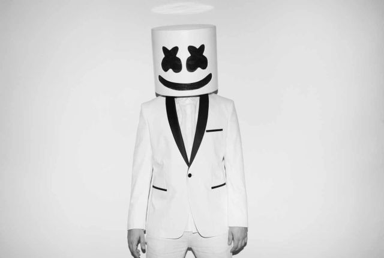
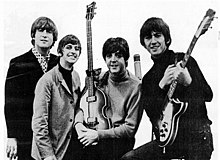

Links que te podrian gustar
¿Que es la musica?
El término música tiene su origen del latín “musica” que a su vez deriva del término griego “mousike” y que hacía referencia a la educación del espíritu la cual era colocada bajo la advocación de las musas de las artes.
Puede decirse que la música es el arte que consiste en dotar a los sonidos y los silencios de una cierta organización. El resultado de este orden resulta lógico, coherente y agradable al oído.
Ejemplos de oraciones que incluyen esta palabra: “La maestra de música me felicitó por mis avances con la guitarra”, “Amo escuchar música: no puedo trabajar sin ella”, “Gasto buena parte de mis ingresos en música, ya sea en entradas
a conciertos o en discos”.
Existen diversos principios que permiten llevar a cabo esta organización de los sonidos y silencios. La armonía, la melodía y el ritmo, por citar tres elementos, son cuestiones que deben tenerse en cuenta a la hora de generar
música.
Lo que hace un músico, ya sea profesional, aficionado o hasta improvisado, es tratar de generar alguna sensación en el oyente. La creación musical estimula la percepción del ser humano y puede desde entretener a la persona hasta
aportarle algún tipo de información.
Cuando un cuerpo vibra, produce un movimiento que modifica la presión y se transmite en el aire, pudiendo ser captado por el oído. Eso es, ni más ni menos, que un sonido. Cuando no hay sonido, nos encontramos con el silencio
(que, a diferencia de lo que uno podría pensar, nunca puede ser absoluto debido a la existencia de la atmósfera).
La música, en definitiva, consiste en combinar sonidos y silencios. Los sonidos, a su vez, pueden ser infinitos, ya que es posible trabajar con innumerables variaciones de duración, intensidad, altura o timbre.
La música es un arte que acompaña la vida del ser humano desde los comienzos de la historia. Según explican ciertas teorías su origen tuvo lugar a partir de intentar imitar los sonidos que existían en la naturaleza y sonidos
provenientes de la parte interna del ser humano, como el latido del corazón. Los descubrimientos que se han hecho en torno a este arte demuestran que ya existían conceptos de armonía en la música de la prehistoria.
Con el paso del tiempo se desarrollaron cientos de teorías para explicar el sentido de la música, lo que nadie puede explicar con certeza es qué tienen los sonidos que pueden tocarnos el sistema nervioso y emocionarnos a puntos
que ninguna otra cosa puede hacerlo. La música tiene por ende mucho de misterio, de magia, y presenta para nosotros un mundo que no somos totalmente capaces de comprender pero al que llegamos una y otra vez de forma irremisible.
Tabla de musica :
| Cantante |
Imagen |
Canción mas popular |
| Katy Perry |  | Teenage Dream |
| Jesse y Joy |  | Llorar |
| The Neighbourhood | | Sweater Weather |
| Avicii | | You Make Me |
| 5 Seconds Of Summer | | Young Blood |
| Alan Walker | | Faded |
| Marshmello |  | Solo |
| Cafe Tacuba | | Eres |
| Inspector | | Amargo Adios |
| Linkin Park | | Numb |
| The Beatles |  | And I Love Her |
| Calvin Harris | | One Kiss |
Defenicion de Generos :
- Pop:
-
Estilo musical nacido en la década de 1960, que tiene elementos de la música rock y de la música popular británica y se caracteriza por su estructura sencilla y directa y por la especial importancia que se concede a la melodía.
- Rock:
-
Estilo musical nacido en la década de 1960 como derivación del rock and roll y que se caracteriza por el empleo de melodías y ritmos complejos, con una instrumentación bastante fija (básicamente guitarra eléctrica, bajo eléctrico, teclado y batería).
- Electronica:
- La música electrónica es aquel tipo de música que emplea instrumentos musicales electrónicos y tecnología musical electrónica para su producción e interpretación.
- Rap:
-
Estilo de música de baile nacido en la década de 1980 en los barrios negros e hispanos de Nueva York y otras grandes urbes estadounidenses como derivación del funk y asociado a la cultura hip-hop; se caracteriza por su ritmo
monótono y muy sincopado, sus largos textos cantados casi de manera monologada y sus letras radicales sobre temas como la violencia, la lucha contra el sistema establecido, el sexo, el machismo o el trabajo.
- Dupster:
- El dubstep es un género que surge a finales de los 90s y comienzos de los 2000s en Londres, Inglaterra. Es la culminación de un linaje de estilos como el 2-step garage, broken beat, drum and bass, jungle, dub y reggae.
- Indi Rock:
- El indie rock es un género musical que se originó en el Reino Unido y los Estados Unidos en la década de 1980.
- Electropop:
- El electropop, también conocido a partir de los años 2000 como pop electrónico, es un subgénero del synth pop que apareció a finales de la década de 1970 consistente en una base pop, con una línea de sonido frío
- Rock en Español
- Rock en español es la música rock compuesta e interpretada en castellano. A diferencia del rock en inglés, el rock en español ha logrado tener éxito mundial en pocas ocasiones, y muchas veces ni siquiera entre países de habla hispana
Top 100 Video musicales mas esuchados de la historia
Links que te podrian gustar:
pulsa aqui si quieres descargar tu musica
KatyPerryMusic
Jesse y Joy
The Neighbourhood
Avicii
5 seonds of summer
Alan Walker
Marshmello
Cafe Tacuba
Inspector
Linkin Park
The Beatles
Deja tu comentario